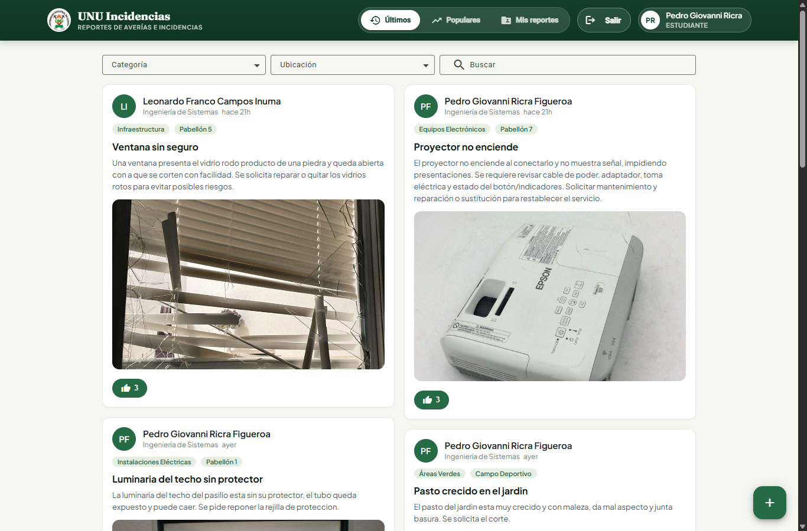
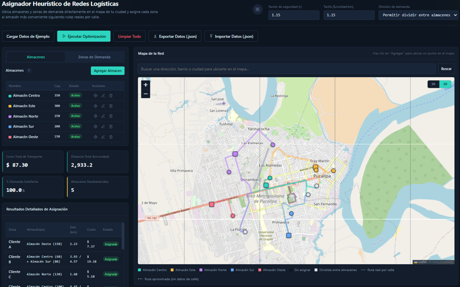
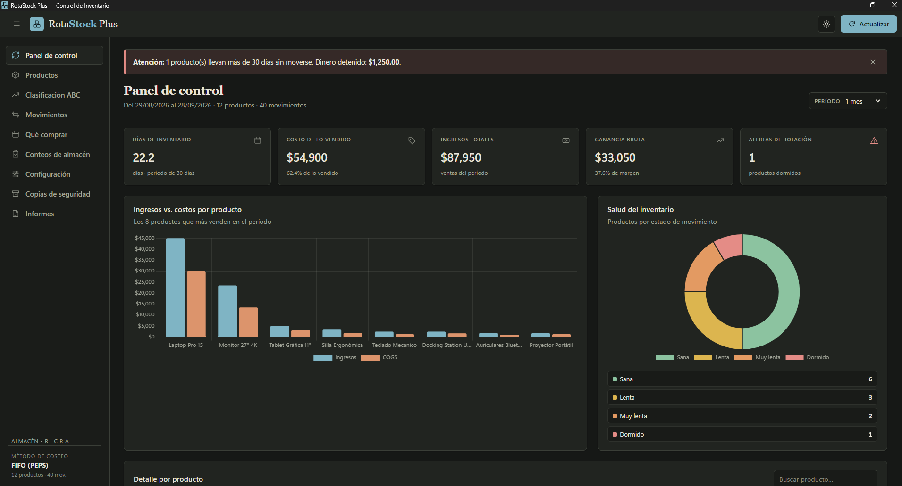

Frontend
FigmaBalsamiqLeaflet.jsChart.js
// hola, soy
Full-Stack Developer
Estudiante de Ingeniería de Sistemas (IX ciclo, UNU). Construyo aplicaciones web, APIs y herramientas de escritorio que ya están en producción: del reporte de incidencias de mi universidad a sistemas de optimización logística.

// sobre-mí
Soy estudiante de Ingeniería de Sistemas (IX ciclo) en la Universidad Nacional de Ucayali, en Pucallpa. Me muevo entre el frontend y el backend: implemento interfaces con validaciones, conecto APIs, modelo bases de datos y cierro el ciclo con pruebas.
En la OTI de la UNU aprendí el principio que repito en cada proyecto: ningún despliegue sale sin un proceso formal de testing. Documento, automatizo y re-ejecuto hasta validar cada corrección.
// skills
Lo que uso cada semana para construir y validar software.
FigmaBalsamiqLeaflet.jsChart.js
PostmanSwagger UIJWT
JSONSheetJSjsPDF
GitHubColabElectronScrum
// proyectos
Código, demo en vivo e instalador. Sin humo: entra y pruébalo.

Abrir demo ↗2025 · Web full-stack · UNU
Problema: la infraestructura del campus se reportaba por canales informales, sin seguimiento.
Solución: aplicación full-stack donde el estudiante registra, consulta y edita reportes con fotografía, tipo de incidencia y ubicación. Construí el módulo del estudiante trabajando con Scrum.
Desplegado en Vercel y en uso por la comunidad UNU.
AngularNode.jsMySQLScrum

Abrir demo ↗2026 · Optimización · Mapa real
Problema: asignar almacenes a zonas de reparto sin criterio de distancia genera costos innecesarios.
Solución: sistema web que optimiza la asignación almacén–zona sobre un mapa real, con distancias por calle, respaldo automático ante fallos del servicio de rutas y KPIs de costo, distancia y utilización.
Algoritmos de optimización implementados desde cero, con visualización geográfica.
JavaScriptLeaflet.jsHTMLCSSJSON

Instalador v2.0.0 ↗2026 · Escritorio offline · Almacén
Problema: almacenes que operan sin conexión y sin control de rotación pierden stock y dinero.
Solución: aplicación de escritorio offline con FIFO, semaforización de rotación, clasificación ABC/XYZ, plan de compras, conteos auditables, informes en PDF y Excel, y copias de seguridad automáticas.
Release v2.0.0 publicada con instalador descargable.
ElectronJavaScriptChart.jsSheetJSjsPDF
¿Quieres ver más? Explora todos mis repositorios ↗
// experiencia
04/2025 – 07/2025 · Pucallpa
Universidad Nacional de Ucayali · Sistema de Posgrado · Plataforma AURA
Selenium IDEPythonColabGitGitHub
2025 – actualidad · Remoto
3 sistemas publicados con demo o instalador · Metodología Scrum
AngularNode.jsElectronMySQL
// educación
2022 – actualidad
Universidad Nacional de Ucayali · Pucallpa
9 de 10 ciclos · enfoque en software, datos y testing
2024 · UNTELS, Lima Sur
CONEIMERA · equipo de 3 integrantes
Problemas algorítmicos complejos y optimización bajo presión.
2025 · UNT, Trujillo
CONEIMERA · Congreso nacional de estudiantes
Innovación tecnológica y arquitecturas modernas.
// contacto
Busco prácticas y proyectos donde el código llegue a usuarios reales.